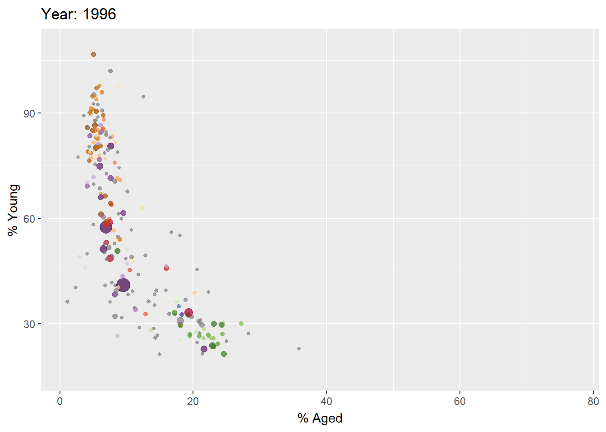

Show the code
pacman::p_load(readxl, gifski, gapminder, plotly, gganimate, tidyverse)Goh Si Hui
January 24, 2024
January 24, 2024
In this exercise, we will learn how to create animated data visualisation by using gganimate and plotly r packages. At the same time, we will also learn how to (i) reshape data by using tidyr package, and (ii) process, wrangle and transform data by using dplyr package.
Animated data visualisations are actually made of up several individual plots built and stitched together as movie frames, just like an old-school flip book or cartoon. Each frame is a different plot when conveying motion, which is built using some relevant subset of the aggregated data.
Before we dive into the steps for creating an animated statistical graph, it’s important to understand some of the key concepts and terminology related to this type of visualization.
Frame: In an animated line graph, each frame represents a different point in time or a different category. When the frame changes, the data points on the graph are updated to reflect the new data.
Animation Attributes: The animation attributes are the settings that control how the animation behaves. For example, we can specify the duration of each frame, the easing function used to transition between frames, and whether to start the animation from the current frame or from the beginning.
Before you start making animated graphs, we should first ask ourselves: Does it makes sense to go through the effort?
An animated graphic may not be worth the time investment for exploratory data analysis. However, it might be more useful if it is meant for presentation because a few well-placed animated graphs can help audience connect with the presentation topic better than static graphs.
Before we start, let us ensure that the required R packages have been installed and import the relevant data for this hands-on exercise.
For this exercise, other than tidyverse, we will use the following packages:
plotly: an R library for plotting interactive statistical graphs
gganimate: an ggplot extension for creating animated statistical graphs
gifski: converts video frames to GIF animations using pngquant’s fancy features for efficient crossframe palettes and temporal dithering. It produces animated GIFs that use thousands of colours per frame.
gapminder: an excerpt of the data available at Gapminder.org. We want to use its country_colors scheme for this exercise.
The code chunk below uses p_load() of pacman package to check if the abovementioned packages are installed in the computer. If they are, they will be launched in R. Otherwise, pacman will install the relevant packages before launching them.
In this hands-on exercise, the Data worksheet from GlobalPopulation Excel workbook will be used.We will first use read_xls() of readxl package to import the excel sheet, then use mutate_each_() of dplyr package to convert all character data type into factor, then we will use mutate() to convert data values of the Year field into integer.
Unfortunately, mutate_each_() was deprecated in dplyr 0.7.0. and funs()was deprecated in dplyr 0.8.0. In view of this, we will re-write the code by using mutate_at() as shown in the code chunk below.
gganimate extends the grammar of graphics implemented by ggplot2 by including animation. It does this by providing a range of new grammar classes that can be added to the plot object in order to customise how it should change with time.
In the following code chunk, we plot a static bubble plot using the basic ggplot2 functions.
To create an animated bubble plot from the static bubble plot, we add the following functions to the code chunk in the previous tab:
transition_time(): to create transition through distinct states in time (in this case, it is year)ease_aes(): to control easing of aesthetics. The default is linear, Other methods are: quadratic, cubic, quartic, quintic, sine, circular, exponential, elastic, back, and bounce.ggplot(data = globalpop, aes(x = Old, y = Young, size = Population, color = Country)) +
geom_point(alpha = 0.7, show.legend = FALSE) +
scale_color_manual(values = country_colors) +
scale_size(c(2,12)) +
labs(title = "Year: {frame_time}",
x = "% Aged",
y = "% Young") +
transition_time(Year) +
ease_aes("linear")